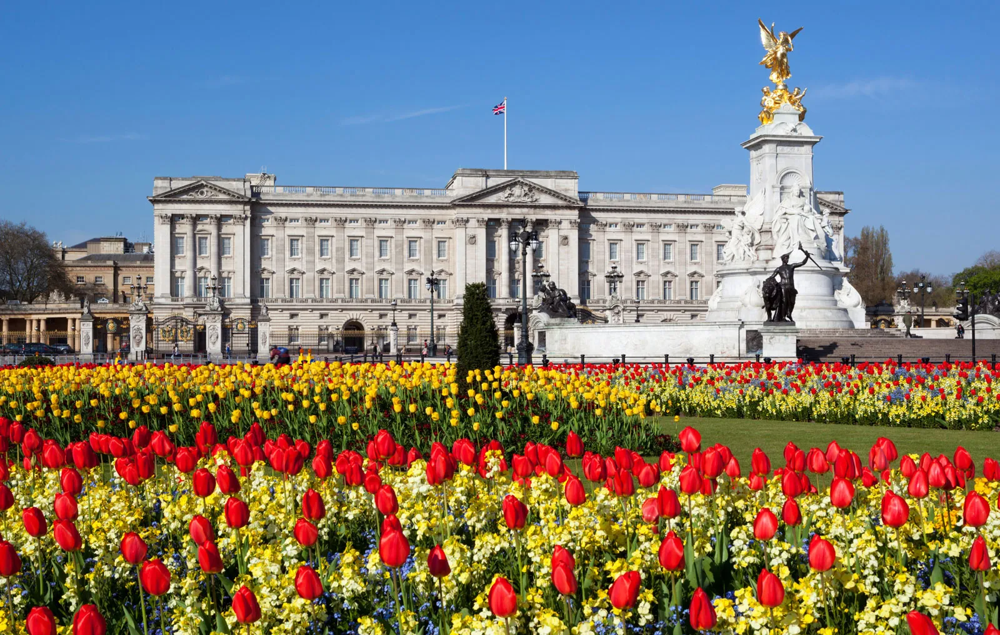

The current British monarch's formal residence and administrative center, Buckingham Palace, is situated in London's City of Westminster. It is a royal residence as well as a well-known representation of the British monarchy. The palace, which was once called Buckingham House, was constructed in 1703 as the Duke of Buckingham's private residence. Later, King George III bought it and converted it into a royal palace in 1761. It has undergone extensive repairs and extensions over time to become the spectacular palace that we see today. 